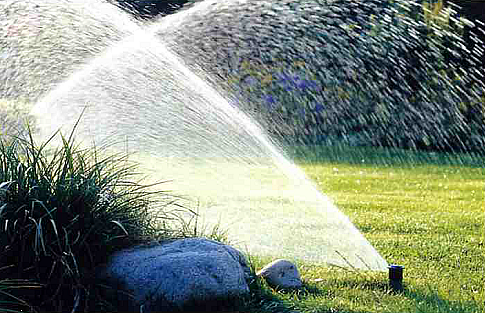

Стоят жаркие летние дни. Уже неделя ни капли воды, воздуха, струится и дрожит, всюду душистый аромат хвои и листьев. Газон потускнел и имеет желтизну, а быстро отцветшие цветы бессильно попадали по поверхности земли. Чтобы спасти растения владелец сада нанимает рабочего, который с утра до вечера передвигается с длинным шлангом по всему участку. На участках со сложным дизайном сложно предупредить истаптывание газона, поломку небольших деревьев и кустов, повреждения клумб. Придется периодически приглашать специалиста по ландшафтной фирме, чтобы привести сад к толку. А если напор воды в шланге слишком малый, то и полить участок становится практически невозможно.
Системы орошения (автоматический полив) - это инженерно-технический комплекс, что позволяет выполнять полив участка более качественно и профессионально, чем при ручном поливе. Конструкция системы автоматического полива предусматривает наиболее оптимальный и точный объем поливальной воды, как для газона, так и для зеленых насаждений по заданной программе. Участие человека в работе таких систем нужно только для начального программирования (обычно в начале каждого сезона).
Специально настроенная компъютерная программа делает автоматический полив очень умным. Время полива может регулироваться на каждом участке по-разному, в зависимости от того, сколько влаг необходимо тому или другому растению, например, один участок может орошаться 20 минут, а другой нужно 2 часа. Также программу можно настроить на осуществление нескольких поливов в день, или учесть также и ручной полив, так как компъютер не учитывает творческого подхода к процедуре полива.Еще один плюс работы компьютера в работе авто полива заключается в том, что он обеспечен системой диагностики оборудования, которая способна автоматически определять ошибки и неисправности в работе клапана и подавать сигнал тревоги.
Хорошо, что современные технологические изобретения в сфере полива добрались и к нам. Такое совершенное устройство, как автоматический полив, будет незаменимым средством грамотного полива и долгие годы прослужит Вам, радуя результатами своей работы.
Система автоматического полива для газонов состоит из 4-х основных частей:
I Контролер (программатор)
- устройство, которое управляет. Мозг всей системы, которая подает сигналы электромагнитным клапанам. Контролер руководит клапанами по очереди согласно Вашей программе. При завершении полива одной зоны, он включает клапан следующей зоны полива и так далее.
II Электромагнитный клапан
 - клапан регулирует доступ воды к зоне полива (модулю) с набором дождевателей. Эти зоны распределяются в соответствии с имеющимися типами растениями, их расположением, сложностью конфигурации, площадей. - клапан регулирует доступ воды к зоне полива (модулю) с набором дождевателей. Эти зоны распределяются в соответствии с имеющимися типами растениями, их расположением, сложностью конфигурации, площадей.
III Дождеватель
 - устройство, смонтированное, как правило, под землей. Начинает работать при определенном давлении в системе труб. Под давлением воды шток с форсункой выдвигается и начинается полив. Высота поднятия форсунки может достигать 30 см.
IV Погодная станция
 - устройство, которое отключает систему полива в случае дождя, сильного ветра или низкой температуры. Чаще применяется датчик дождя. - устройство, которое отключает систему полива в случае дождя, сильного ветра или низкой температуры. Чаще применяется датчик дождя.
Хорошо, что современные технологические изобретения в сфере полива добрались и к нам. Такое совершенное устройство, как автоматический полив, будет незаменимым средством грамотного полива и долгие годы прослужит Вам, радуя результатами своей работы.
Специалисты нашей фирмы помогут Вам спроектировать и устроить автоматический полив в г. Черновцы и за его пределами.
Звоните нам, будем рады Вам помочь!
Украина, г. Черновцы, ул. Фастовская 30 Б. +380509126841, +380970165646. |